E.E. Eliana Fischer Bambi Delfino Pinto Profª
Gestão à Vista
M.M.R.
Anos Iniciais
Ação: Retomar o projeto de leitura com foco no baixo rendimento em Língua Portuguesa nos Anos Iniciais para incentivar e desenvolver a leitura e a compreensão leitora com autonomia.
Etapa: Entregando os livros rotativamente aos alunos e acompanhando a realização das leituras e feedback dos alunos.

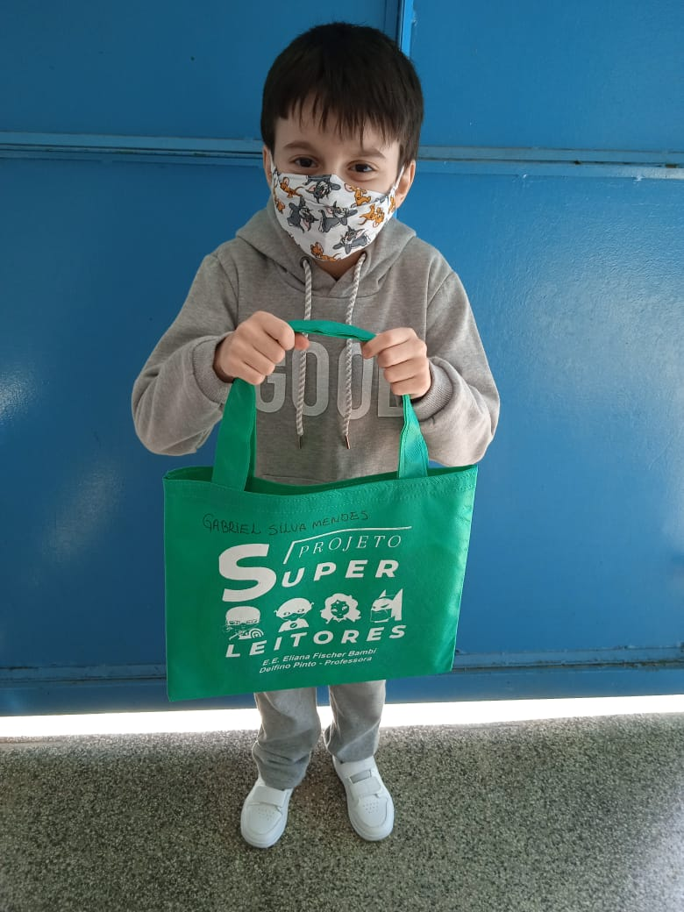
Gabriel Silva Mendes - 2° Ano
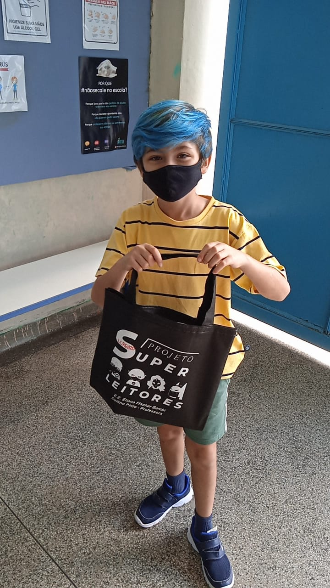
Lorenzo Hardt Roncada - 4° Ano
Etapa: Apresentando o projeto de leitura aos educandos o repertório dos livros selecionados.
Professora Michelle Rigotti - 3° Ano
Anos Iniciais
Ação: Intensificar as ações da escola com foco na recuperação e nos descritores do nível 4 da escala de proficiência de Língua Portuguesa nos Anos Iniciais.
Etapa: Socializando entre os professores o processo de alfabetização, ao final de cada bimestre no conselho de classe/série.
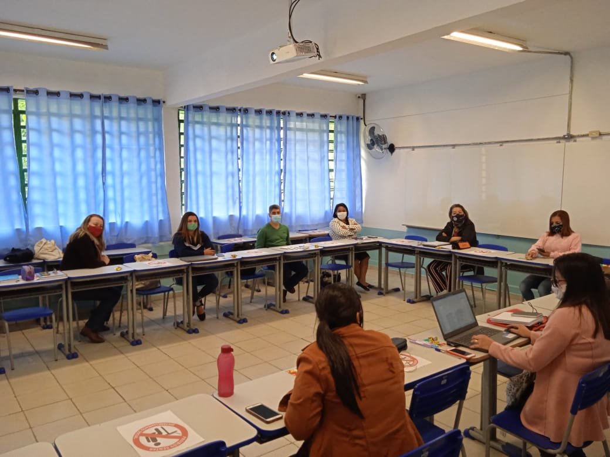
Etapa: Elaborando atividades adaptadas de recuperação com foco na alfabetização, a partir das habilidades essenciais do 1º e 2º ano.
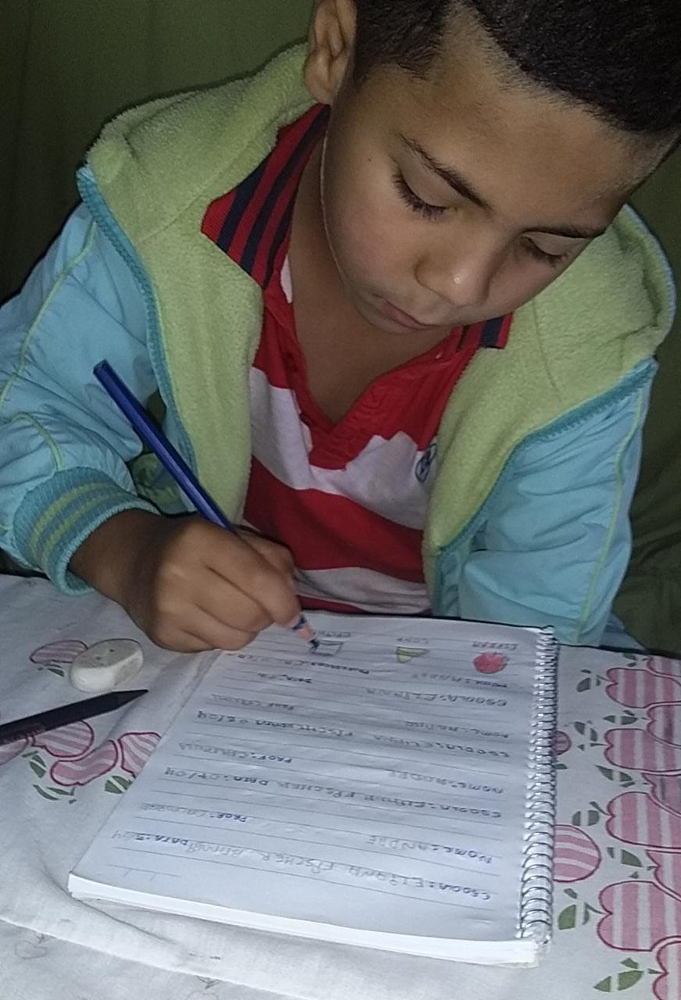
André Luiz do 1° Ano - Profª Calmirante
Etapa: Identificando nos estudantes através da sondagem, o nível de proficiência escritora de cada um para o mapeamento da classe de acordo com as hipóteses de escrita de cada ano.
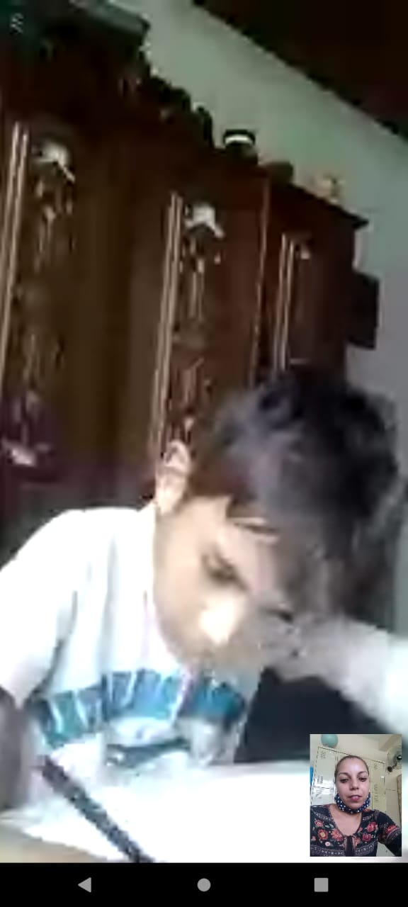
Daniel Berreta do 2° Ano - Profª Alcione Oliveira
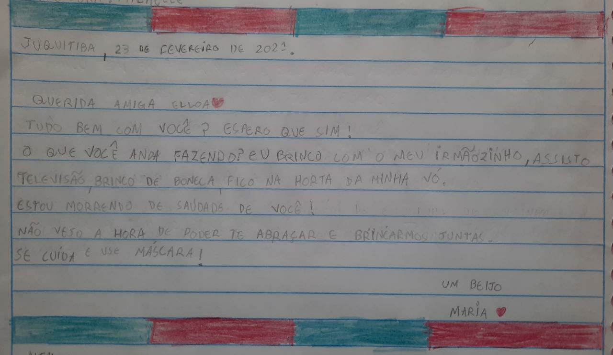
Sondagem da aluna Maria Isadora do 3° Ano - Profª Michelle Rigotti
Anos Iniciais
Ação: Aprimorar as ações com foco no desenvolvimento das habilidades socioemocionais para melhorar a autonomia e o desempenho dos estudantes dos Anos Iniciais em Língua Portuguesa.
Etapa: Trabalhando a metodologia ativa "mão na massa" para desenvolvimento da autonomia dos estudantes.
Felipe Santos Medeiros do 5° Ano - Profª Maria Rocha.
Anos Finais e Ensino Médio
Ação: Intensificar o desenvolvimento das habilidades socioemocionais para desconstruir o pensamento negativo quanto ao ensino e a aprendizagem de matemática nos Anos Finais/ Ensino Médio.
Etapa: Socializando o progresso dos alunos em reuniões de ATPC e Conselho de Classe com todos os professores.
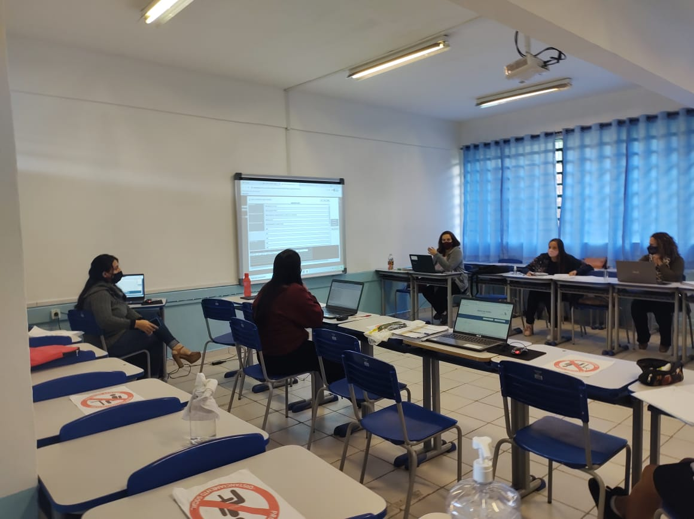
Anos Finais e Ensino Médio
Ação: Aprimorar o acompanhamento e o monitoramento das estratégias de ensino e de aprendizagem do ensino remoto com foco em matemática no Ensino Fundamental/ Ensino médio.
Etapa: Acompanhando e reavaliando o ensino remoto, periodicamente, através das mídias utilizadas, especialmente no CMSP, para alinhar as estratégias utilizadas.
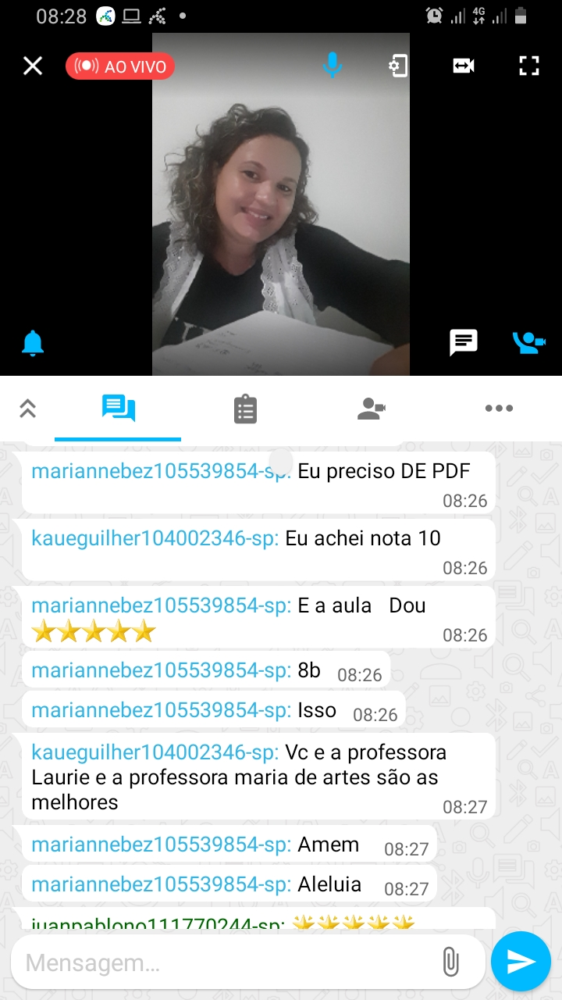 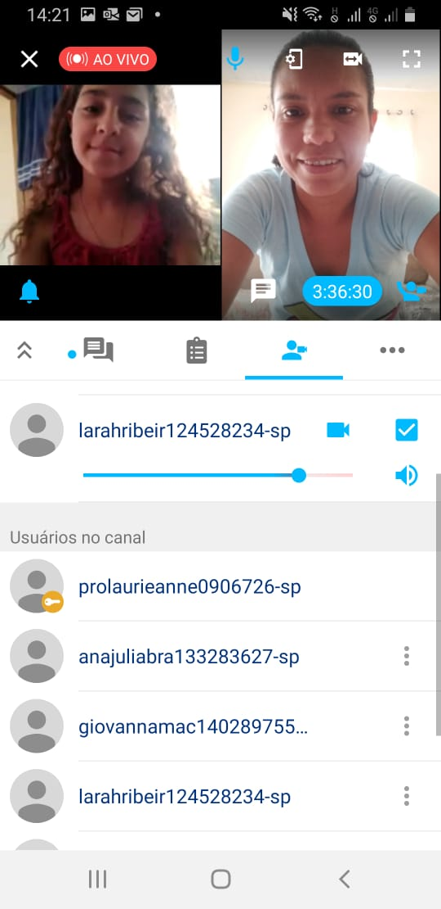 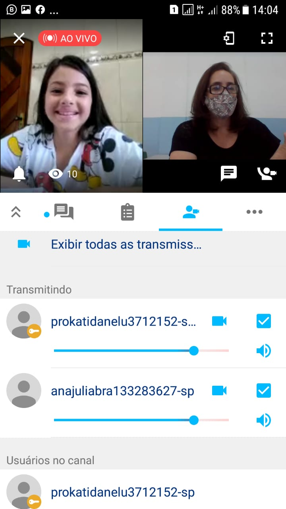
Etapa: Elaborando, quinzenalmente, roteiros que contemplem as habilidades essenciais de acordo com o currículo, com foco nos alunos que não tem acesso à internet.
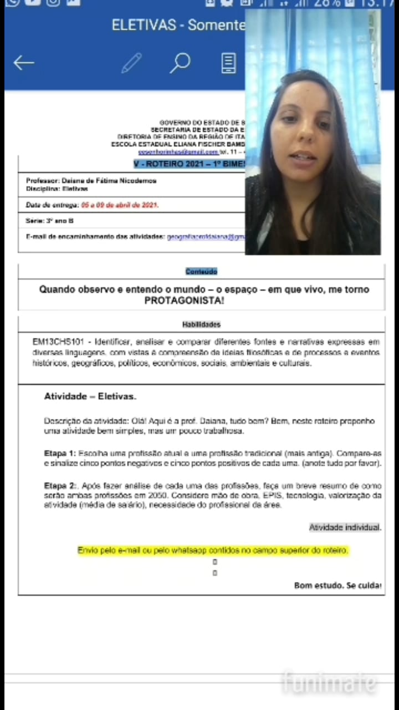
Anos Finais e Ensino Médio
Ação: Desenvolver o letramento matemático com foco nos descritores do nível 3 da escala de proficiência de matemática no Ensino Fundamental/Ensino Médio.
Etapa: Realizando, bimestralmente uma autoavaliação com os estudantes para reconhecer os seus próprios avanços nos anos finais do Ensino Fundamental.

Etapa: Acompanhando as aulas com foco nos indicadores das metodologias utilizadas pelo docente no Ensino Fundamental/ Ensino Médio.
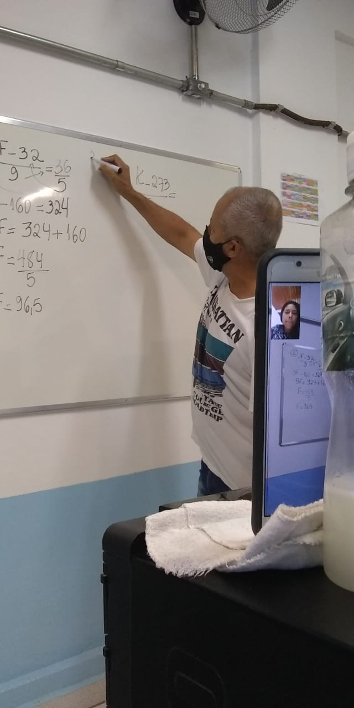
Professor Walter Ribeiro
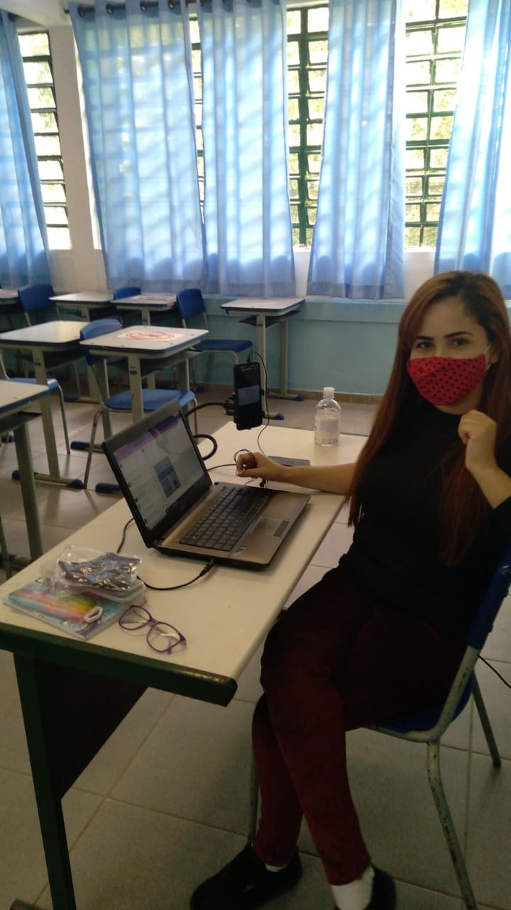
Professora Idinéia Matos